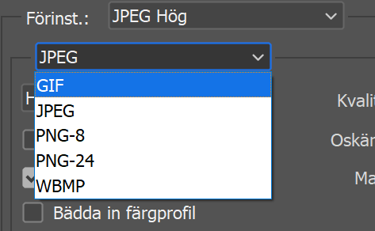

Photoshop
Photoshop är ett väldigt användbart bildredigeringsverktyg. I den här sektionen kommer vi gå igenom hur man anpassar bilder för webben.
En webbläsare pratar med webbservrar genom olika protokoll för att hämta Html, CSS och JS filerna, Därför vill du hålla dessa filer så små som möjligt. Om filerna väger mycket kommer det belasta servrarna och skapa högre laddningstider, dessutom blir din kostnad för att hålla sidan uppe bli högre. Ett bra sätt att minska storleken på sidan är att anpassa bilderna för webben och då minska storleken på dessa så mycket som möjligt utan att de ser dåliga ut.
Bildoptimering
För att göra detta börjar man med att öppna bilden i photoshop och går in i arkiv där man sedan
väljer exportera. I menyn så kommer upp så väljer man spara för webben, för ett lättare sätt att
nå denna meny kan man trycka in alt+shift+ctrl+s.

Kvalitet
När man kommit in på sidan så kan man minska bildens storlek på två olika sätt. Man kan börja med
att sänka bildens kvalitet vilket kan göras vi förbeställda inställningar (Hög, medel låg) eller
för mer precisa resultat så kan ändra på kvalitets-värdet till höger om det förbestämda
valen.
Storlek
Det andra metoden man kan använda för att minska bildstorleken är att göra bilden mindre. Längre
ner i menyn finns det en ruta för bildstorlek där bildens pixelmått visas och en ruta för
bildens procentuella mått. För att behålla bildens form så är det bäst att man ändrar på det
procentuella måttet istället för pixel-måtten. Precis som med kvaliteten så är det väldigt
viktigt att bilden fortfarande ser bra ut när du ändrar på bildstorleken.
Filtyper
En annan viktig sak som man kan använda photoshop till är att ändra en bilds filtyp då de typer som finns har olika syften. De tre största som används är JPG, PNG och GIF.
JPG är den vanligaste av de tre filtyperna och är också standard-typen för digitala bilder. Den här typen används mest för fotografier men för att minska på bildens storlek å komprimeras den mer än de andra filtyperna så denna filtyp används mest för fotografier som ska laddas upp till hemsidor.
Den andra sortens filtyp är PNG. PNG bilder används aldrig för tryckta verk utan funkar bäst för bilder på webbplatser där man har med text eller lineart. PNG bilder kommer också alltid ha en transparent bakgrund till skillnad från JPG.
Den sista av de tre största filtypernas för bilder är GIF. Gif bilder komprimerar bilder precis som JPGs men till skillnad från dem så blir det ingen skillnad på bildens kvalitet när den gör det. Nackdelen med detta är att bilden kommer att ha väldigt liten färgpalett vilket gör att man aldrig använder dem för tryckta verk utan används exklusivt för webbilder. GIF bilder är också populära eftersom man kan använda dem för att spara animerade bilder.
Precis som med bildens storlek så kan man lätt byta en bilds filtyp genom photoshop. För att göra det öppnar man spara för webben menyn som när man ska ändra bildens filstorlek och precis ovanför kvalitets fliken så kan man välja vilken filtyp man ska spara bilden som. Det går också att göra genom “spara som” menyn.
